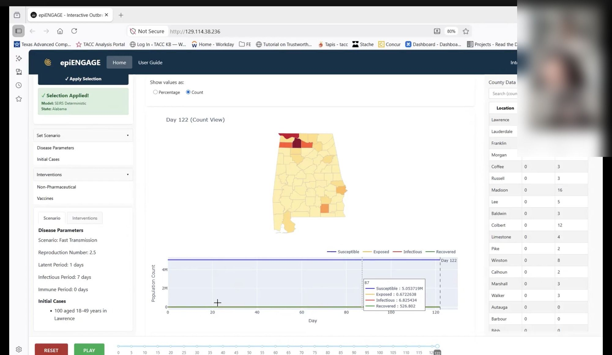
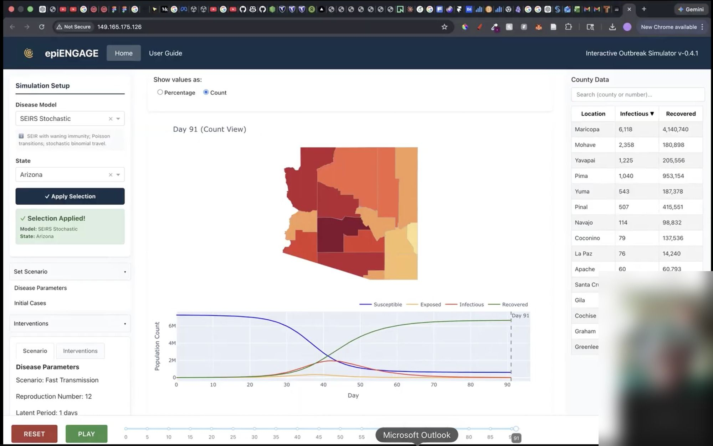
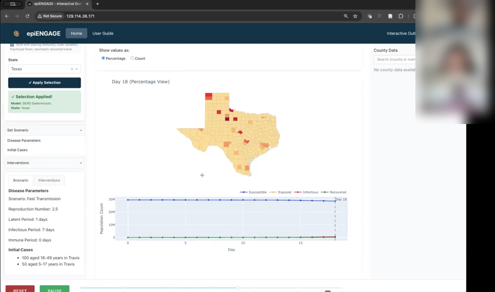
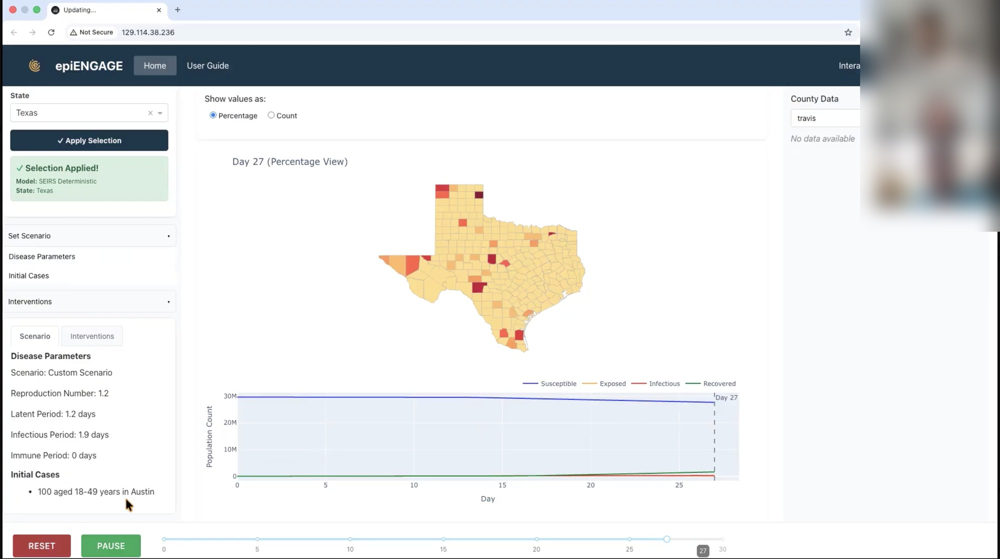
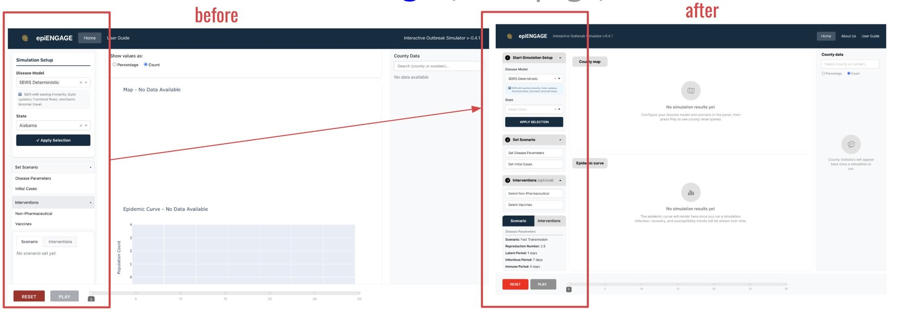
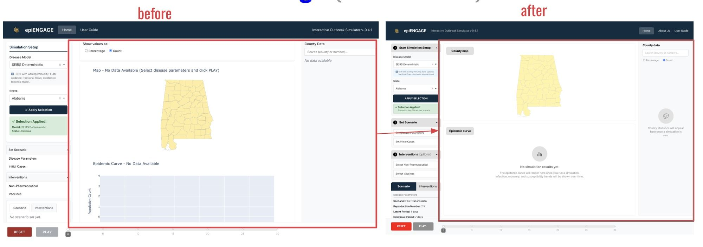
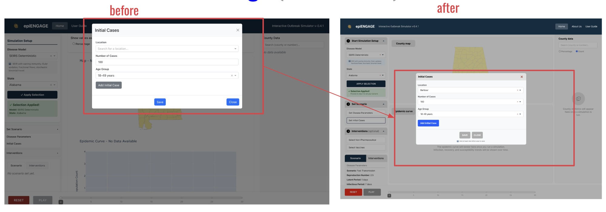
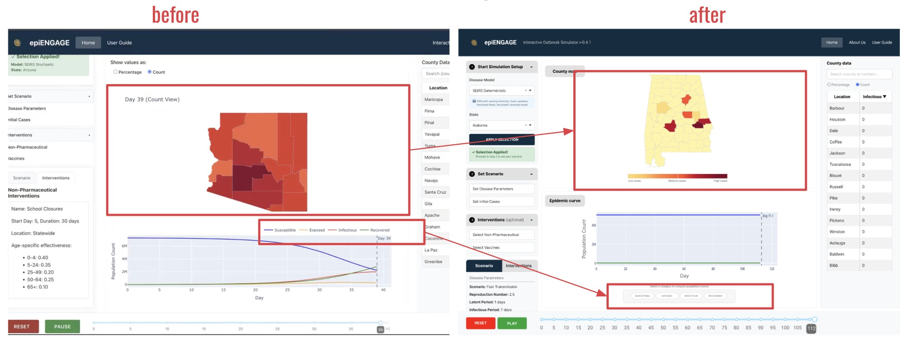

Growing an epidemic simulator's users from 100+ to 800+
A structured usability consulting engagement for the Interactive Outbreak Simulator (epiENGAGE), an NSF-backed epidemic modeling platform: a heuristic evaluation, moderated usability testing, and a full interface redesign.
The problem
The Interactive Outbreak Simulator (epiENGAGE) is an NSF-backed epidemic modeling platform used by 100+ scientists to simulate disease spread across US counties and test intervention strategies like school closures and vaccination campaigns.
The platform had never been formally evaluated for usability. Inconsistent button styling, parameter fields that could be saved empty, and chart interactions with no discoverable entry point were the kind of friction that gets in the way of a scientist trusting a model's output, not just clicking through its interface.
The core simulation flow was the biggest offender. Most users bounced out before finishing a single run, and the drop-off was worst at the step where they had to choose their disease model's parameters and variables: dense, unexplained settings with no indication of what was required before the simulation could even be started. A platform meant to make epidemic modeling accessible to more scientists was, in practice, only usable by the people who already knew how to use it. The Interactive Outbreak Simulator team engaged the SGCI Usability Consulting team to evaluate and enhance the platform's UX, accessibility and overall usability.
My role
I served as Evaluation and Design Lead. As a PhD student working under Dr. Paul Parsons, Project Lead and Supervisor, I led day-to-day execution across all three milestones, coordinated the team, and was the primary point of contact with the project team throughout the engagement.
I also advised Linh Pham, an undergraduate UX researcher who collaborated closely with me on evaluation planning, project team meetings and design execution, while contributing directly to the UX analysis, research, design and reporting myself.
Heuristic evaluation
The first milestone was a structured expert review using Nielsen's 10 Usability Heuristics, conducted without end-user involvement. It let us systematically identify usability issues and establish a clear foundation before we ever put the platform in front of a real scientist. The evaluation surfaced issues across four heuristic categories:
- Consistency & standards — Buttons of equal color but different importance, and inconsistent placement, made it unclear what a scientist was supposed to do next.
- Error prevention — Required parameter fields could be saved empty, and the "Reset" button wiped every setting instantly with no warning, despite being a fully destructive, non-reversible action.
- Error recognition & recovery — Errors were highlighted in color, but without an explanatory message telling users what was actually wrong.
- Help & documentation — Chart interactions that only revealed data on click had no visible affordance, and the workflow never explicitly told users what to do step by step to run a simulation.
Usability testing
The second milestone was moderated usability testing with 10 participants recruited through the Interactive Outbreak Simulator team, designed to surface pain points the heuristic evaluation couldn't catch on its own. Findings clustered into four areas:
- Model setup & system understanding — Participants wanted clearer explanations of how each outbreak model worked, and some didn't realize Disease Parameters and Initial Cases both had to be completed before a simulation could run.
- Initial case configuration — Users interpreted "Save" as adding a case and "Add Initial Cases" as adding more, and the grey "Add Initial Cases" button read as disabled, leaving them unsure whether anything had actually happened.
- Visualization clarity — Participants asked for clearer legends for color-coded case severity, distinguishable line patterns, and guidance on interactive features like pausing, filtering and navigating the timeline.
- Help guide visibility — Most participants never noticed the User Guide when they got stuck, defaulting to trial-and-error instead.




Redesign
The third milestone translated every finding from the heuristic evaluation and usability testing into a high-fidelity prototype, addressing clarity, accessibility and overall usability across the platform.
A sequential, numbered setup flow
The simulation setup panel was restructured with clearly numbered steps, giving users an explicit workflow that was completely absent from the original design.

Empty states that explain themselves
The county map and epidemic curve empty states were updated to show clear placeholder messaging and icons instead of flat text, and the map rendering itself was cleaned up and better positioned within its container.

Buttons that say what they do
The "Add Initial Case" button was restyled from grey to blue so it read as an active primary action, Save and Close were repositioned and visually differentiated, and a helper message now tells users a case must be added before they can save.

Legends that explain the data
The map gained a color legend running from low to high cases, and the epidemic curve's legend moved from a plain line key above the chart to labeled, color-coded category pills below it for Susceptible, Exposed, Infectious and Recovered.

Impact
Across three milestones, the engagement delivered a full usability foundation for a platform that didn't have one:
- A heuristic evaluation across four categories, using Nielsen's 10 Usability Heuristics, formally presented to the platform team.
- Moderated usability testing with 10 real users, surfacing setup and interaction issues the expert review alone couldn't catch.
- A high-fidelity redesign addressing every finding, from setup flow to error prevention to chart legends, delivered as a Figma prototype ready for implementation.
- Scientists using the platform grew from 100+ to 800+, and simulation completion rose from 2 in 10 attempts to 9 in 10.
- The work fed into a published research paper on the platform.
Reflection
Designing for scientists is a different discipline than designing for consumers. The users here didn't need convincing to use the tool, they needed to trust that a button click did what they thought it did, before they read a chart and cited it in their own research. Advising Linh, an undergraduate researcher, while staying the project team's main point of contact meant carrying two different kinds of communication at once, technical detail in one direction, mentorship in the other. If I revisited one decision, it would be building a standing usability check-in into the platform's roadmap from day one, rather than treating it as a single end-of-engagement deliverable, which is exactly what we ended up recommending to the project team.